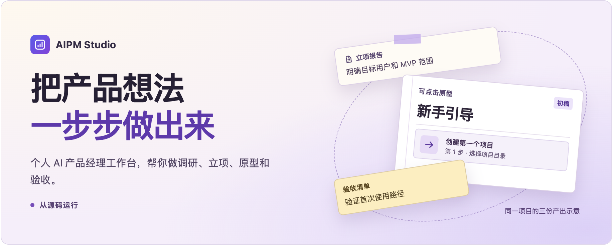
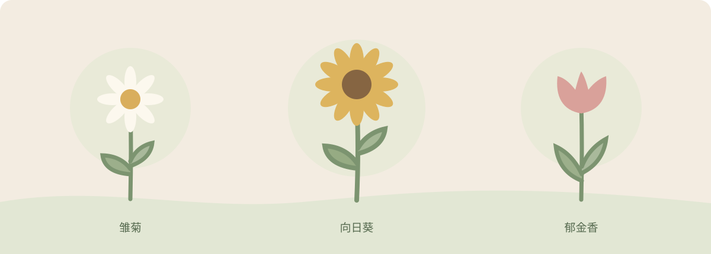
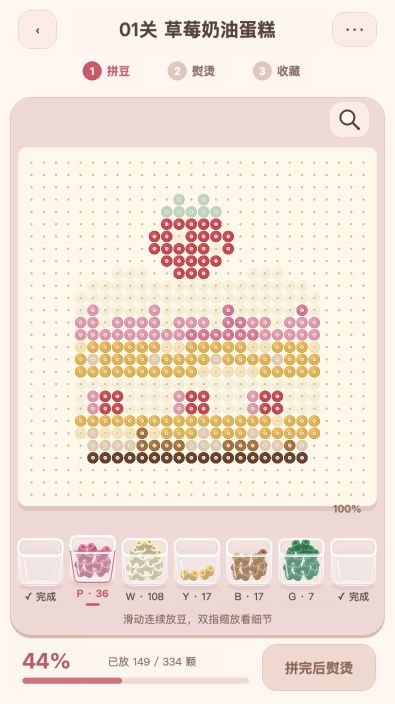
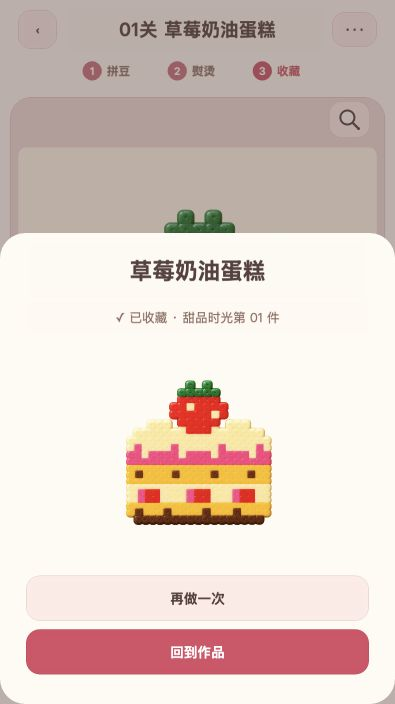

DeepSeek 能读百万上下文了，我们还需要上下文工程吗？
用一个跨两天的写作任务，拆开长上下文、RAG 和记忆各自能做的事。
01 / 项目实践
从 AI 工作台到拼豆小游戏。
点击项目，查看源码与项目说明。

基于 DeepSeek Harness 构建的个人 AI 产品管理工作台。从调研和需求资料出发，生成立项报告、PRD 和交付清单，交由人确认下一步。

把想做的事拆成可以开始的一小步。和 AI 园丁一起定计划，记录每天的行动，看自己的花园慢慢长起来。


把拼豆手作搬到屏幕上。从草莓蛋糕到猫咪咖啡杯，拼完六款图案，把熨烫好的作品收进自己的收藏。
02 / REUSABLE SKILLS
把做产品时反复用到的方法，
写成 Agent 可以照着走的工作流。
03 / NOTES & WRITING
记录 AI 产品、新技术和动手做的过程。
收录公众号文章与站内稿件。
关于 AI，关于产品，
也关于把想法付诸实践。
04 / A LITTLE ABOUT ME

我是一名 AI 产品经理，
也在尝试亲手把想法做出来。
我在 GitHub 发布项目和 Skills。在公众号 Alinix，我写 AI 产品实践，也拆解感兴趣的新技术。
这个网站是这些探索的集合，也会随着新的项目与文章，一点点更新。